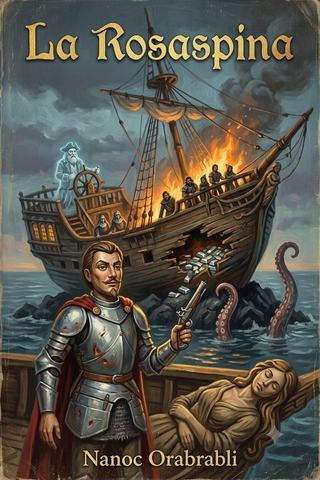
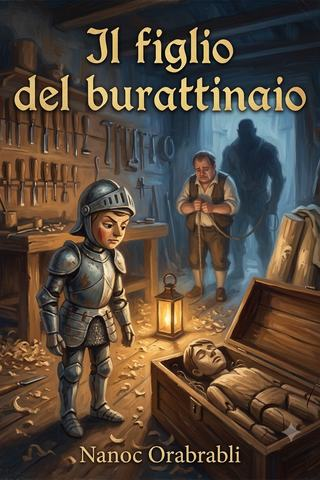
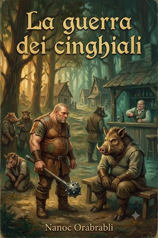
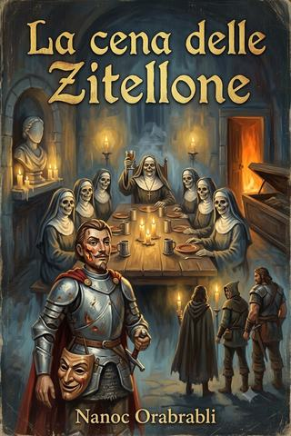
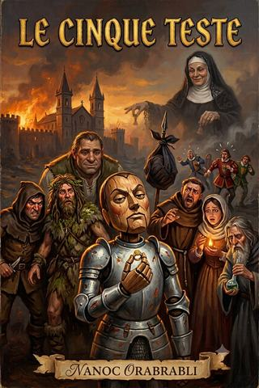
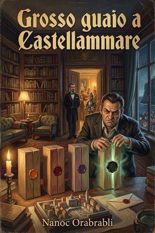
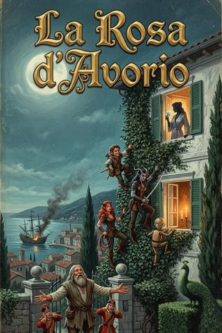

Racconto I
La Rosaspina
Un favore facile su una nave fantasma diventa una storia di legno che galleggia, ama, parla e — perché a Penumbria le storie di legno finiscono così — brucia. Qui nascono la pirofobia di Truciolo e l'incontro con Baffanera.

Racconto II
Il figlio del burattinaio
A Porto Patacca un mastro artigiano ha perso il «figlio», la sua prima marionetta, e la banda è mandata a rimediare una perdita che non si può rimediare. Una storia su cosa rende un figlio un figlio, e su quanto costa averci creduto.

Racconto III
La guerra dei cinghiali
Venti cinghiali da consegnare a un'osteria si rivelano l'estremità visibile di una faida antica e di un patto tradito, tra Ponteratto e la città-popolo di Suinotopia. Si può chiamare «fratello» ciò che si dovrebbe mangiare?

Racconto IV
La cena delle Zitellone
Morti che apparecchiano la tavola, sante vendute più volte di una casa alla moda e una maschera di legno che parla da cinque secoli: la banda finisce in un convento dove nessuno si è accorto di essere defunto. Una storia di cose che non muoiono solo perché nessuno le ha avvertite.

Racconto V
Le cinque teste
Sette scalzacani del Regno di Taglia — un pupo di legno, un ladro, un druido, un morgante, un frate, una scaramante e un mago — accettano un lavoretto facile che, come sempre a Penumbria, degenera tra confessioni, santi da tirar giù e teste che non tornano più indietro. La prima impresa della banda.

Racconto VI
Il Grigione
Alla Morte dei Marmi un fuocherello acceso «giusto per», con le migliori intenzioni, innesca il cataclisma che entra nella leggenda. La legge non scritta di Penumbria: più piccola è la causa, più grosso è il disastro.

Racconto VII
Grosso guaio a Castellammare
Un lavoretto facile — recuperare un pacchetto — diventa un giallo di porto, una festa alla villa del Conte e quattro scatole sigillate di cui una non andava aperta. A Penumbria ci si lava le mani con l'acqua degli altri, ed è per questo che non vengono mai pulite.

Extra · fuori continuity
La Rosa d'Avorio
Nei bassifondi di Crimini, Don Lillo «Pancetta» Ferracciano ingaggia la banda per un colpo: rubare La Rosa d'Avorio. Un'avventura extra fatta di covi, moli, diversivi e discese, dove il regalo finale non è mai quello che sembra.